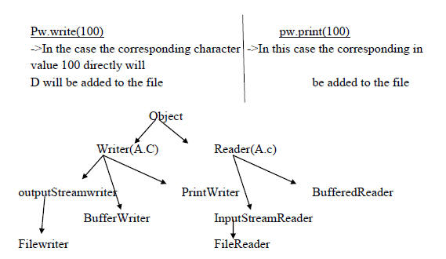
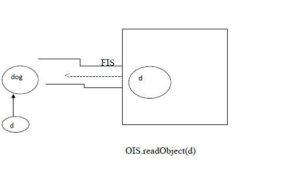
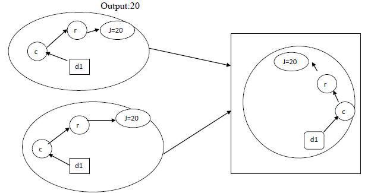

Java.io.package
File I/o :-
1.File
2.FileWriter
3.FileReader
4.BufferReader
5.BufferWriter
6.PrintWrite
(1)
File:-
File p=new file("abc.txt");
->This line won't create any physical file, first it will check is there any file named abc.txt is available or not.
->If it is available then it simply point to that file
->If it is available then it represents just name of the file without creating any physical file.
File f=new file("abc.txt");
s.o.pln(f.exists()); //false
f.createNewFile();
s.o.pln(f.exists()); //true
-> A java file object can represent a directory also
Example:
File f=new file("javat123");
s.o.pln(f.exists()); //false
f.mydir();
s.o.pln(f.exists()) //true
Constructors:-
(1) File f=new File(string name)
->Create a java file object to represent name of a file as directory
(2) File f=new file(string subdir,string name);
->To create a file for directory present in some other sub-directory.
(3) file f=new file(file subdir,string name)
Example:
Write code to create a directory named with javat123 in current working directory. In that directory create a file named with abc.txt
File f=new file("javat123");
f.mkdir();
file f1=new file("javat123","abc.txt");
f1.createNewFile();
file f1=new file(f,"abc.txt");
f1.createNewFile()
Important methods of file class:-
(1) Boolean exists();
->return true if the physical file or directory present
(2) Boolean createNewfile():-
->First this Method will check whether the specified file is already available or not. If it is already available then this method returns false without creating new File. If it is not already available then this method returns true after creating new File.
(3)Boolean mkdir();
(4)Boolean isFile();
(5) Boolean isDirectory();
(6) String[] list();
->It returns the name of all files and sub-directories present in the specified directory.
(7) boolen delete();
-> To delete a file or directory
(8)long length();
->returns the no. of characters present in the specified file
W.a.p to point the names of all files and sub-directories present in "D:\javat-classes".
Import java.io.*;
class Test
{
p.s.v.main(String args[]) throws Exception
{
File f=new file("D:\\javat-classes");
String[]s=f.list();
For(string s1==s)
{
s.o.pln(s1);
}
}
}
(1)FileWriter:-
->We can use filewriter object to write character data to the file.
Constructor:-
(1)filewriter fe=new filewriter(String name);
(2)filewriter fw=new filewriter(file f);
->The above two constructor meant for overloading. If we want to perform append instead of overriding then we have to use the following constructors.
(3)Filewriter fw=new filewriter(String name,Boolean append);
(4)filewriter fw=new filewriter(file f,Boolean append);
->If the specified file is not already available then the above constructors will create that file.
Method of filewriter:-
(1)write(int ch);
To write a single character to the file
(2)write(char[] ch);
To write an array of characters to the file
(3)write(String s);
To write a string a file.
(4)flush();
To give the generate that last character of the data also return to the file.
(5)close();
Example:
Demo program for the file writer.
import java.io.*;
class filewriterDemo
{
p.s.v.main(Sring args[])
{
Filewriter fw=new filewriter("we.txt",true);
Fw.write(100); //adding a single character
Fw.write("javat\n softwaresolutions");
Char[] ch={'a','b','c','d'};
Fw.write('\n');
Fw.write(ch);
Fw.write('\n');
Fw.flush();
Fw.close();
}
}
(3)Filewriter:-
->we can use fileReader to read character data from the file
Constructor:-
1.FileReader fr=new FileReader(String name);
2.FileReader fr=new FileReader(file f);
Methods Of fileReader:-
(I) int Read():-
*It attempts to read next character from the file and return its Unicode value.
*If the next character is not available then this methods returns '-1'.
(II) int Read(char[] ch):-
*It attempts to read enough characters from the file into the char array and returns the no. of characters which are coppied from file to the chr[].
(III)Close():-
Example: On fileReader
Import java.io.*;
class FileReaderDemo
{
p.s.v.main(String args[]) throws IOException
{
File f=new file("wc.txt");
fileReader fr=new FileReader(f);
s.o.pln(fr.read); //Unicode of first characters
char[] ch2=new char[(int)(f.length())];
fr.read(ch2); //file data copied to array
for(char c:ch2)
{
System.out.println(c);
}
s.o.pln("*****.................");
FileReader fr1=new fileReader(f);
int i=fr1.read();
While(i!==-1)
{
s.o.pln((char) i);
i=fr1.read;
}
}
}
*Usages of filewriter and filereader is not recommended because:
1) While writing data by filewriter we have to insert line seperators manually which is a bigger header to the programmer.
2)By using fileReader we can read data character by character which is not convenient to the programmer.
3)To resolve there problem SUN people introduced BufferReader and BufferReader classes.
(I)BufferWriter:-
->We can use BufferWriter to write character data to the file.
Constructor:-
1)BufferWriter bw=new BufferWriter(writer w);
2)BufferedWriter bw=new BufferWriter(writer w,int buffer);
Note:-
->BufferWriter never communicates directly with the file compulsory it should communicate via some write object only.
Q) Which of the following are valid?
(1)BufferWriter bw=new BufferWriter("abc.txt");
(2) BufferWriter bw=new BufferWriter(new file("abc.txt"));
(3) BufferWriter bw=new BufferWriter(new FileWriter("abc.txt"));
(4) BufferWriter bw=new BufferWriter(new FileWriter(new file("abc.txt")));
Important methods of BufferReader:-
(1) Writer(int ch)
(2)write(char[] ch)
(3)write(String s)
(4)Flush()
(5)close()
(6)newline():- To insert a newline characters
Q) When compared with file writer which of the following capability is available as a separate methods in Buffer writer
(1)writing data o the file
(2)flushing the stream
(3)closing the stream
(4)inserting a line seperators
Example:
import java.io.*;
class BufferWriterDemo
{
p.s.v.main(Stringargs[]) throws IOException
{
File f=new file ("wc.txt");
Filewriter fw=new filewriter(i);
Bufferwriter bw=new BufferWriter(fw);
Bw.write(100);
Bw=printline();
Char ch1={'a','b','c','d'};
Bw.write(ch1);
Bw=newline();
Bw.write("javat");
Bw=newline();
Bw.write("software solutions");
Bw.flush();
Bw.close();
}}
o/p - d
abcd
javat
softwaresolutions
Note:
When ever we are closing BufferWriter automatically under laying writer will be closed
Bw.close(); fw.close(); fw.close();
bw.close();
Right Wrong Wrong
(IV)BufferedReader():-
->The main advantages of bufferedReader over fileReader is we can read the data line by line instead of reading character by character. This approach improves performance of the system by reading the no. of read operations.
Constructor:-
(i)BufferedReader br=new BufferedReader(Reader r);
(ii) BufferedReader br=new BufferedReader(Reader r,int buffer size);
Note:-
BufferedReader can't communicates directly with the file compulsory it should communicate some reader object.
Importants methods:-
(i)int read();
(ii)int read(char[] ch);
(iii)close();
(iv) String readline()--It attempts to find the nextline and if the nextline is override then it returns it, otherwise it returns null.
import java.io.*;
class Buffered
{
p.s.v.main(String args[])
{
fileReader fr=new FileReader("wc.txt");
BufferedReader br=new BufferedReader(fr);
String line=br.readline();
}
Br.close();
}
}
o/p:
javat
software
(v)PrintWriter:-
->This is the most enhanced writer to write a character data to file. By using filewriter we can write only character data but by using printwriter we can write only primitives datatypes to the file.
Constructor:-
(1)Printwriter pw=new Printwriter(String name);
(2)printwriter pw=new printwriter(file f);
(3)printwriter pw=new printwriter(writer w);
Methods:-
(1)write(int ch) print(char ch) println(char ch)
(2)write(char[] ch) print(int i) println(int i)
(3)write(Sring s) print(long l) println(long l)
Print(double d) println(double d)
(4)flush() print(string s) println(string s)
(5)close() print(char[] ch) println(char[] ch)
Example:
Import java.io.in.*;
Class PrintWriterDemo1
{
p.s.v.main(String[] args) throws IOException
{
Filewriter fw=new filewriter("wc.txt");
Printwriter pw=new printwriter(fw);
Pw.write(100);
Pw.println(100); //100
Pw.println(true); //true
Pw.println('c'); //c
Pw.println("javat"); //javat
Pw.flush();
Pw.close();
}
}
o/p:-100
true
c
javat
Q)What is the diff between the following
(a)pw.write(100);
(b)pw.print(100);

Note:-
->reader and writer ment for handling character data (any primitive data type).
->To handle binary data(like image,movie files,java file...) we should go for Streams.
->We can Use InputStream to read binary data and OutputStream to write a Binary data.
->We can use InputStream to read binary data and outputstream to write a binary data.
->we can use object InputStream tand ObjectOutputStream to read and write objects to a filerespectively (Serialization).
->The most enhanced writer to write character data is printwriter()
Where as the most enhanced Reader to read character is BufferedReader.
@)w.p to merge data from two files into a 3rd files
file3.txt=file1.txt +file2.txt;
import java.io.*;
class FileManager
{
p.s.v.main(String args[]) throws Exception
{
Printwriter pw=new PrintWriter("output.txt");
BufferedReader br=new BufferedReader(new FileReader("file.txtx"));
String line=br.readline();
While(line!=null)
{
Pw.println(line);
Line=br.readline();
}
Br=new BufferedReader(new fileReader("file2.txt"));
Line=br.readline();
While(line!=null)
{
Pw.println(line);
Line=br.readline();
}
Pw.close();
Br.close();
Pw.close();
}
Example:
w.a.p to merge data from 2 files into a 3rd file both merging should be done line by line alternatively
import java.io.*;
class filemerge2
{
p.s.v.main(Sring args[]) throws IOException
{
Printwriter pw=new printwriter("output.txt");
BufferedReader br1=new BufferedReader(new fileReader(file1.txt));
BufferedReader br2=new BufferedReader(new fileReader(file2.txt));
String line1=br1.readline();
String line2=br2.readline();
While((line1)!=null |(line2)!=null)
{
if(line1!=null)
{
Pw.println(line1);
Line!=br1.readline();
}
if(line2!==null)
{
Pw.println(line2);
Line2=br.readline(line1);
}
}
Pw.close();
Pw.flush();
Br1.close();
Br2.close();
}
}
Example:
w.a.p to merge data from 2 files into a 3rd file but merging should be done paragraph by paragraph. Assume that there is a Blankline between every 2 para?
import java.io.*;
class DuplicateElimination
{
p.s.v.main(Sring args[]) throws Exception
{
Printwriter pw=new printwriter("output.txt");
BufferedReader br1=new BufferedReader(new fileReader("input.txt"));
String line=br1.readline();
While(line!=null)
{
if(line.equals(target))
{
Available=true;
Break;
}
Target=br2.readline();
}
if(available==false)
{
Pw.println(line);
Pw.flush();
}
Line=br.readline();
}
Pw.close();
Pw.flush();
Br1.close();
Br2.close();
}
}
(5)w.a.p to perform file extraction(result.txt=total.txt-delete.txt)
import java.io.*;
class fileExtraction
{
p.s.v.main(String[] args) Throws Exceptions
{
BufferedReader br1=new BufferedReader(new FileReader("mobile.txt"));
Printwriter pw=new printwriter("output.txt");
String line=br1.readline();
While(line!=null)
{
Boolean available=false;
Bufferedreader br2=new BufferedReader(new FR("delete.txt"));
String target=br2.readline();
While(target!=null)
{
If(line.equals(target))
{
Available=true;
Break;
}
Target=br2.readline();
}
if(available==false)
{
Pw.println(line);
}
Line =br1.readline();
}
Pw.flush();
Pw.close();
Br1.close();
Br2.close();
}
}
Serialization:-
(1)Introduction
(2)Object Graphs in Serialization
(3)Customized serialization
(4)Serialization w.r.t Inheriatance
Serialization:-
->The process of writing state of an object to a file is called serialization.
->But strictly it is a process of converting an object from java supported from to either file supported from or networks support form.
->By using classes we can achieve serialization.
Deserialisation :-
->The process of reading static of an object from a file is called deserialization.
->But strictly speaking. It is the process of connecting an object from either networks supported form or filesuppored form to java supported form.
->By using and classes we can achieve De-serialization.

Example:
import java.io.*;
class Dog implements serializable
{
int i=10;
int j=20;
}
class SerializationDemo
{
p.s.v.main(String[] args) throws Exception
{
Dog d1=new Dog();
FileOutputStream fos=new FileOutputStream("abc.txt");
ObjectOutputStream oos=new ObjectOutputStream(fos);
Oos.writeobject(d1);
FileInputStream fis=new FileInputStream("abc.txt");
OIS ois=new OIS(fis);
Dog d2=(Dog) ois.readobject();
s.o.pln(d1.i +"..........."+d2.i);
dog d
d
}
}
->We can perform serialization only for serializable objects
->An objects is said to be serializable iff the corresponding class implements serializable interface.
->Serializable interface present in java.io package and dosen't contains any mothers, it is a makers interface.
->If we are rying to serialize a non-serializable objects we will get run time exception saying NotSerizableException
transient keyword:-
-> At the time of serialization if we don't want to serialize the value of a particular variable to meet the security constraints we have to disclose those variable with "transient" keyword->The time of serialization Jvm ignores original value of transient variable and saves default value.
Transient vs static:-
->static variable are not part of object hence they won't participate in serialization process due to this disclosing a static variable as transient this is no impact.
Transiant vs final:-
->Final variable will be participated into serialization directly by their values hence declare a final variable wit transient there is no impact.
Summary:-
Object Graph in Serialization:-
When we are trying to serialize an object .The set of all objects which are reachable from that object will be serialized automatically this group of object is called "Object Graph".
In object graph every object should be Serializable otherwise we will get "not-Serializable exception".
Example:
Import java.io.*;
class dog implements Serializable
{
cat s=new cat();
}
class cat implements Serializable
{
rat r=new rat();
}
class cat implements Serializable
{
int j=20;
}
class serializableDemo2
{
public static void main(String ar[])
dog d=new dog();
FileOutputStream fos=new FileOutputStream("abc.ser");
ObjectOutputStream oos=new ObjectOutputStream(fos);
Oos.writeObject(d);
FileIutputStream fis=new FileOutputStream("abc.ser");
ObjectIutputStream ois=new ObjectIntputStream(fis);
dog d1=(dog)ois.readObject();
System.out,println(d1.c.r.j)
}

In the above program whenever we are serializing a dog object automatically cat and rat object will be serialized because these are the part of object graph of dog.
Among dog, cat and rat if at least one class is not serializable then we will get NotSerializableException.
c
r
J=200
d1
c
r
J=200
d1
c
r
J=200
d1
Customized Serialization
In the default Serialization there may be chance of loss of information because of transient keyword.
Example:
class Account implements Serializable
{
String username="CST";
transient String password="System";
}
class SerializeDemo3
{
Public static void main(String ar[])
{
Account a1=new Account();
System.out.println(a1.username+"---"a.password);
FileOutputStream fos=new FileOutputStream("abc.ser");
ObjectOutputStream oos=new ObjectOutputStream(fos);
oos.writeObject(a1);
FileInputStream fis=new FileInputStream("abc.ser");
ObjectInputStream ois=new ObjectInputStream(fis);
Account a2=(Account)readObject();
System.out.println(a2.username+"---"a2.password);
In the above Example Serialization account object can provide proper username and password but after deserialization account object can't provide the original password,hence during default Serialization there may be chance of loss of information due to transient keyword. We can recover this information by using customized serialization.
We can implement CustomizedSerialization by using rhe following two methods:
1)provide void writeObject(oos oos)throws Exception
This method will be executed automatically at the time of serialization it is call back method.
2)private void readObject(ois ois)throws Exception:
This method will be executed automatically at the time of deserialization it is callback method.
The above 2 methods we have to define in the corresponding class of serialized Objet
Example:
import java.io.*;
Class Account implements serializable
{
String username="javat";
transient string pwd="anushka";
private void writeobject(objectOutputStream as) throws Exception
{
os.defaultwriteobject();
Username=CST
Password:null
String pwd=(String)is.readobject();
pwd=epwd.substring(3);
}
}
class CustSerializeDemo1
{
p.s.v.main(String[] args) throws Exception
{
Account a1=new Account();
s.o.pln(a1.username+".........."+a1.pwd);
fileOutputStream fos=new FileOutputStream("abc.txt");
ObjectoutputStream oos=new FileOutputStream(fos);
Oos.writeobject(a1);
FileInputStream fis=new FileInputStream("abc.txt");
ObjectInputStream ois=new ObjectInputStream(fis);
Account a2=new(Account)ois.readobject();
s.o.pln(a1.username+"........"+a2.pwd);
}
}
Below is the diagram for above example:
Serialization w.r.t Inheritance:-
Case1:-
->If the parent class implements serializable the every child class is by default serializable i.e serializable nature is inheriting from the parent to child (p->c).
Example:class Animal implements Serializable
{
int x=10;
}
Class Dog extends Animal
{
int y=20;
}
->We can serializable dog object eventhough dog class doesn't implements Serializable interface explicitly because its parent class animal is Serializable.
Case 2:-
-> Even though parent class doesn't implements Serializable and if the child is serializable then we can serialize child class object. At the time of serialization jvm ignores the original value of instance variable which are coming from non-serializable parent and store default values.
->At the time of deserialization jvm classes is any parent class is non-Serializable or not,jvm create a separate object for every non-serializable parent and share its instance variable to the current object.
->For this jvm always calls no arguments constructor of the non-Serializable parent. If the non-Serializable parent doesn't have no arguments constructor then we will get runtimeException.
Example:
Import java.io.*;
Class Animal
{
Int i=10;
Animal()
{
s.o.pln("Animals constructor called.");
class Dog ectends Animal implements serializable
{
Int j=10;
Dog()
{
s.o.pln("Dog constructor called");
}
}
p.s.v.main(Sring[] args) throws Exception
{
Dog d=new Dog();
d.i=888;
d.j=999;
FileOutputStream fos=new FileOutputStream("abc.txt");
Object OutputStream oos=new ObjectOutputStream(fos);
Oos.writeObject(d);
s.o.pln("Deserilization started");
FileInputStream fis=new FileInputStream("abc.txt");
Object InputStream ois=new Object InputStream(fis);
Dog d1=(Dog)ois.readobject();
s.o.pln(d1.i+"........"+obj);
}
}